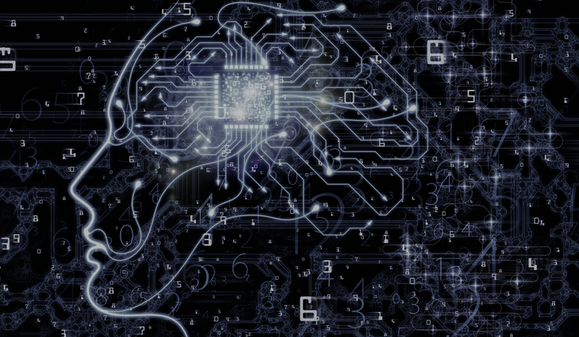

Deep Learning là gì?
Deep Learning là định nghĩa thuộc về một phần các thuật toán trong Machine Learning với đặc thù mang độ phức tạp cao hơn, là một tập hợp con của Machine Learning, bản thân nó nằm trong lĩnh vực trí tuệ nhân tạo. Vì vậy có thể nói hai khái niệm giữa Deep Learning và Machine Learning hoàn toàn có liên hệ mật thiết với nhau.
Hình 1: Thời đại trí tuệ nhân tạo AI
Thông qua hình ảnh và định nghĩa nêu trên ta thấy được tầm quan trọng của sự phát triển trí tuệ nhân tạo AI trong thời đại công nghiệp 4.0 . Và bây giờ , chúng ta sẽ đi tìm hiểu một đề tài rất hot hiện nay chính là Deep Learning hay Tiếng việt còn gọi là “học sâu” để biết rõ và chi tiết hơn về nó.
Như đã nói trên Deep Learning là một tập con của Machine Learning. Machine Learning là một thuật ngữ rộng để chỉ hành động bạn dạy máy tính cải thiện một nhiệm vụ mà nó đang thực hiện. Cụ thể hơn, Machine Learning đề cập tới bất kỳ hệ thống mà hiệu suất của máy tính khi thực hiện một nhiệm vụ sẽ trở nên tốt hơn sau khi hoàn thành nhiệm vụ đó nhiều lần. Hay nói cách khác, khả năng cơ bản nhất của Machine learning là sử dụng thuật toán để phân tích những thông tin có sẵn, học hỏi từ nó rồi đưa ra quyết định hoặc dự đoán về một thứ gì đó có liên quan. Thay vì tạo ra một phần mềm với những hành động, hướng dẫn chi tiết để thực hiện một nhiệm vụ cụ thể, máy tính được “huấn luyện” bằng cách sử dụng lượng dữ liệu và các thuật toán để học cách thực hiện nhiệm vụ.
Từ Machine Learning phải dạy cho máy tính nhận dạng vật gì đó thì con người đã phát triển lên Deep Learning ,ở đây con người không cần phải dạy một chương trình gì cả mà nó sẽ tự hình dung và tự học như một bộ não con người.

Hình 2: Deep Learning và Machine Learning
Deep Learning là loại Machine Learning mà trong đó máy tự đào tạo chính nó. Deep Learning đòi hỏi rất nhiều dữ liệu đầu vào và sức mạnh tính toán hơn là Machine Learning, và nó đã bắt đầu được ứng dụng và triển khai bởi các công ty công nghệ lớn như Facebook, Amazon.